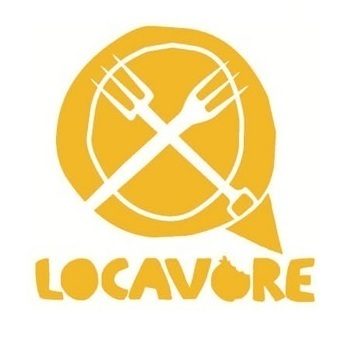
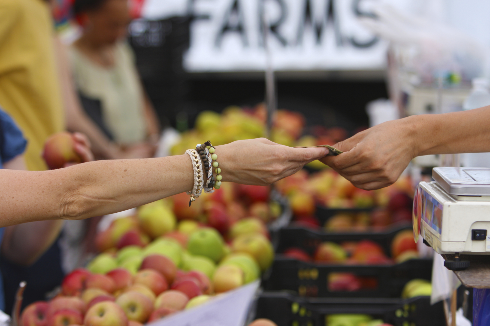

Home
Menunews
Here is a place to add news. The first news article would probably be talking about the new website, then might be a new member of staff joining the team. The news section is to tell the world about updates.
why local
This page is dedicated to the promotion of Virginia Beach grown agricultural products, small family farms and small grasroots businesses.
community
The farmers who grow my food are supporting a healthy planet. The personal relationship I have with them allows me the opportunity to learn about their growing practices. I can intentionally choose to buy food from farmers who grow food
using the most sustainable practices. By supporting them and those practices, we are promoting environmental health together. This is another part of the relationship.
by Megan Kemple
- Our stories
- highlights: special seasonal recipes
- recipes library